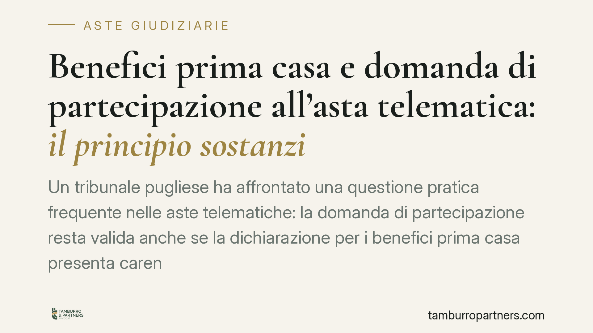

Benefici prima casa e domanda di partecipazione all'asta telematica: il principio sostanzialista
Un tribunale pugliese ha affrontato una questione pratica frequente nelle aste telematiche: la domanda di partecipazione resta valida anche se la dichiarazione per i benefici prima casa presenta carenze formali? La risposta, in chiave sostanzialista, interessa chiunque intenda acquistare l'abitazione principale in sede di vendita forzata e gestire correttamente la fiscalità agevolata.

Asta telematica e benefici prima casa: il caso
La questione nasce da una vendita immobiliare celebrata con modalità telematica. Un partecipante aveva presentato domanda intendendo fruire dei benefici prima casa, ma la dichiarazione relativa alle agevolazioni presentava profili di irregolarità formale. Il nodo: tali carenze travolgono la domanda di partecipazione all'asta telematica, oppure riguardano un piano distinto, quello fiscale?
La pronuncia richiamata è attribuita al Tribunale di Brindisi. Si segnala che, alla data di redazione, non risultano pubblicamente verificabili gli estremi completi (sezione, data del deposito e numero di ruolo). L'analisi che segue va quindi letta come ricostruzione del principio applicato — l'orientamento sostanzialista — e non come commento puntuale a un provvedimento di cui si possano citare gli estremi ufficiali. Chi intenda farne uso in sede difensiva dovrebbe reperire il testo integrale presso la cancelleria competente.
Il quadro normativo: Nota II-bis e aliquote
I benefici prima casa trovano fondamento nella Nota II-bis alla Tariffa, Parte I, allegata al D.P.R. 26 aprile 1986, n. 131 (Testo Unico dell'imposta di registro). La norma subordina l'agevolazione a requisiti sostanziali: l'immobile non deve appartenere alle categorie catastali di lusso (A/1, A/8, A/9); l'acquirente non deve essere titolare esclusivo di altra abitazione nel Comune, né di altra abitazione acquistata con le medesime agevolazioni; deve inoltre risiedere o impegnarsi a trasferire la residenza nel Comune entro diciotto mesi.
Sul piano dell'imposizione, l'agevolazione comporta l'imposta di registro al 2% anziché al 9%, con imposte ipotecaria e catastale in misura fissa. Il differenziale è significativo e giustifica l'attenzione al momento e alle modalità della dichiarazione.
Il raccordo processuale: dalla domanda al decreto ex art. 586 c.p.c.
Nelle vendite forzate l'acquisto non si perfeziona con l'aggiudicazione, ma con il decreto di trasferimento previsto dall'art. 586 c.p.c., emesso dal giudice dell'esecuzione dopo il versamento integrale del prezzo. È questo il provvedimento che produce l'effetto traslativo e costituisce il titolo per la trascrizione.
Per la giurisprudenza di legittimità (orientamento consolidato della Corte di Cassazione in tema di agevolazioni nelle vendite coattive), la dichiarazione volta a fruire dei benefici prima casa può essere resa anche in sede di aggiudicazione o comunque entro il momento della registrazione del decreto di trasferimento, e non deve necessariamente essere contenuta nella domanda di partecipazione. Da qui discende la distinzione centrale: la domanda di partecipazione all'asta telematica attiene al piano processuale della regolarità dell'offerta; la dichiarazione fiscale attiene a un piano autonomo, che si consuma nella fase successiva.
L'approccio sostanzialista valorizza questa separazione: un'irregolarità formale della manifestazione di volontà sul regime fiscale non inquina la validità dell'offerta telematica, purché i requisiti sostanziali della Nota II-bis sussistano e vengano documentati nel momento rilevante.
Implicazioni pratiche per chi partecipa
Il principio sostanzialista riduce il rischio che un vizio meramente formale comprometta la partecipazione o l'aggiudicazione. Resta però un limite da tenere presente: l'interpretazione del giudice dell'esecuzione non vincola l'Agenzia delle Entrate. Il riconoscimento dei benefici in sede processuale non equivale a una sanatoria fiscale: l'Amministrazione conserva il proprio potere di accertamento sulla effettiva sussistenza dei requisiti e sulla loro permanenza nel tempo.
In altri termini, la validità della domanda e la spettanza dell'agevolazione viaggiano su binari distinti. Chi acquista l'abitazione in asta telematica sperando nei benefici prima casa deve curare entrambi i piani.
Cosa fare in concreto
- Verificare la categoria catastale dell'immobile prima dell'offerta: l'appartenenza alle categorie di lusso esclude in radice l'agevolazione.
- Accertare la sussistenza dei requisiti soggettivi della Nota II-bis (assenza di altra abitazione nel Comune, nessun precedente beneficio) con documentazione a supporto.
- Rendere la dichiarazione fiscale nel momento processuale rilevante, tenendo presente che il titolo è il decreto ex art. 586 c.p.c. e non la sola aggiudicazione.
- Conservare evidenza dell'impegno al trasferimento della residenza entro diciotto mesi, se non già residenti nel Comune.
- Valutare, con un professionista, l'esposizione a un eventuale accertamento dell'Agenzia delle Entrate, distinta dal riconoscimento in sede esecutiva.
Per chi opera nelle aste telematiche con l'obiettivo dei benefici prima casa, la lezione è netta: curare la sostanza dei requisiti conta più della perfezione formale della domanda, ma non sostituisce il controllo sul piano fiscale.
---
Contributo informativo a cura di Tamburro & Partners Avvocati. Non costituisce parere legale.
Comprare bene all’asta si può.
Se vuoi acquistare un immobile all’asta in sicurezza o difendere un esecutato, scrivi allo studio. Ti rispondiamo entro un giorno lavorativo.